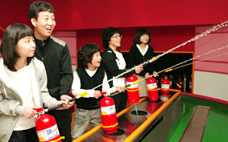

키즈랜드
풋살장
재난안전체험관
꿈나래어린이극장
재난안전체험관

사랑스런 우리 아이들의 안전을 위해
재난에 관한 기본적 정보 및 내용, 체험에 의한 실질적 응급처치 및 대응방법 등 생활에서
일어날수 있는 안전사고 대처방법 교육실시
이용안내
재난안전체험관 이용안내
이용시간
평일
10:00 ~ 18:00 (단체예약)
토/일/공휴일
11:00 / 13:00 / 15:00 / 17:00 (자유관람)
이용요금
무료
체험관안내
오리엔테이션홀
: 재난 안전 체험관을 관람하기전에 각종 시설을 소개하고 주의사항 등을 설명하는 곳입니다.
재난역사전시관
: 우리의 기억속에서 잊혀질 수 없는 대형재난 사례들을 보고 느끼는 공간입니다.
응급처치체험관
: 우리 생활에 필요한 응급처치 및 심폐소생술을 배울 수 있습니다.
생활안전전시관
: 일상생활에 흔히 일어날 수 있는 안전사고들을 예방하는 방법을 배울 수 있습니다.
소화기체험관
: 물소화기를 이용하여 불을 직접 끄는 방법을 배우고 체험하는 공간입니다.